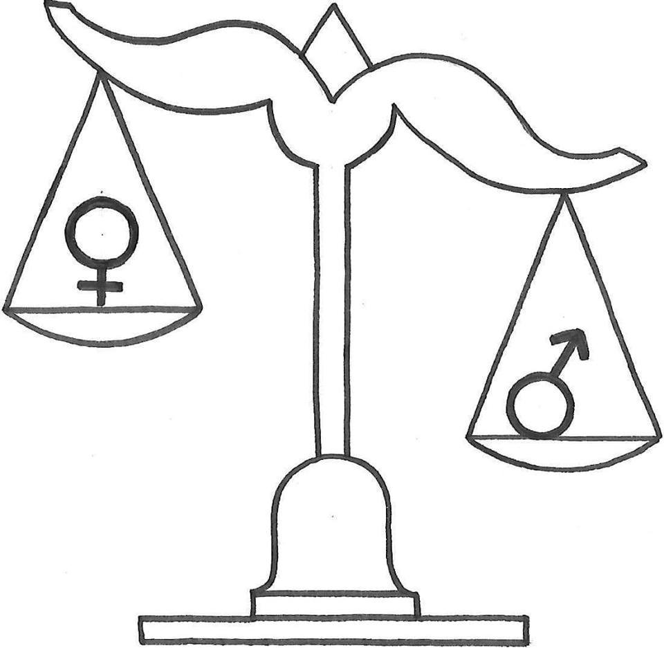

Hipoteza 1: Večina mladostnikov meni, da je feminizem v Sloveniji nepotreben, saj so ženske že dosegle enakopravnost.
Kar 72% anketirancev meni, da so nadaljnja feministična prizadevanja za doseganje enakopravnosti potrebna, 19% pa je mnenja, da je feminizem nepotreben. Hipoteza je ovržena.
Hipoteza 2: Feministična gibanja so najmočnejša v razvitih državah.
S pomočjo virov smo ugotovile, da so feministična gibanja močnejša v razvitih državah, saj je tam višja stopnja izobraženosti in morale. Hipotezo smo potrdile.
Hipoteza 3: Feminizem podpira več žensk kot moških.
Feminizem podpira 95% anketiranih žensk in 80% anketiranih moških. Hipotezo smo potrdile.
Hipoteza 4: Religija ohranja ženske v njihovih tradicionalnih vlogah.
V očeh religije je ženska od nekdaj namenjena temu, da skrbi za družino. S preučevanjem virov smo ugotovile, da kjer je prisotnost religij močnejša, so reforme s strani feminizma manjše. Zaradi tega so ženske še vedno podrejene moškim in ostajajo v svojih tradicionalnih vlogah. Hipotezo smo potrdile.
Hipoteza 5: Večino gospodinjskih del še vedno opravljajo ženske.
S pomočjo ankete smo ugotovile, da gospodinjska dela, kot so likanje, čiščenje kopalnice ipd. v večini primerov opravljajo ženske. To je dobro razvidno tudi iz grafov. Hipotezo smo potrdile.
Hipoteza 6: V moderni družbi se ženske ukvarjajo z družino in so zaposlene.
Raziskave kažejo, da je količina časa, namenjenega gospodinjskemu in družinskemu delu, primerljiva s časom, ki ga ženske preživijo v službi za plačilo . Kljub temu, da se družinsko delo začenja deliti med moškega in žensko, še vedno prevladujejo spolno neenaka družbena pričakovanja. Hipotezo smo potrdile.
